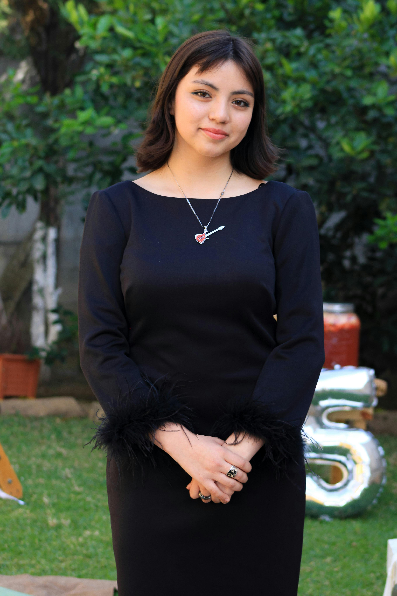

At SmartKids, we believe that education is not just about imparting knowledge but also about nurturing the whole child—intellectually, emotionally, socially, and physically. Our dedicated team of educators is committed to providing a supportive and inclusive learning environment where every child feels valued, challenged, and inspired to reach their full potential. Through a blend of hands-on activities, inquiry-based learning, and interactive experiences, we foster a love of learning that extends beyond the classroom walls.In addition to our rigorous academic program, SmartKids International School offers a rich array of extracurricular activities, including sports, arts, music, and cultural enrichment programs, designed to help students discover their passions and talents. We also prioritize the development of essential life skills, such as communication, collaboration, critical thinking, and resilience, to equip our students with the tools they need to succeed in an ever-changing world.As a trusted partner in your child's educational journey, we understand the importance of strong communication and collaboration between home and school. That's why we strive to maintain open lines of communication with parents, providing regular updates on their child's progress and offering opportunities for family involvement in school activities and events. Whether you're seeking a nurturing daycare environment, a stimulating nursery program, or a dynamic primary school experience, SmartKids International School is committed to providing the highest quality education and care for your child. Come join us on this exciting journey of discovery, growth, and achievement!
Rianne Daniels

Andrea Jimmys